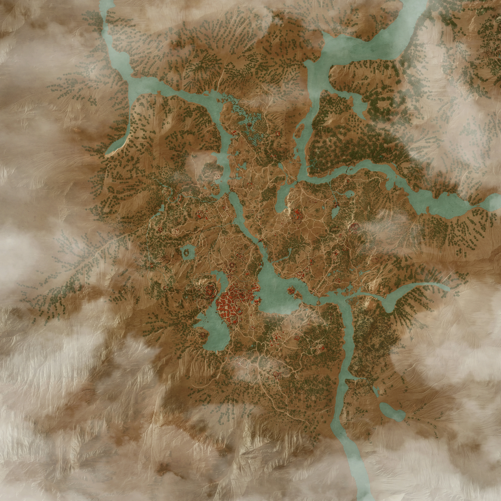

Ďábel u studny - Zaklínač dostal práci vyřešit problém s ďáblem, který strašil u staré stezky, a nakonec ho po těžkém boji přelstil a zbavil vesnici jeho vlivu.
Šěřík a angrešt - Zaklínač vzal zakázku „Šeřík a angrešt“, při které pomáhal najít ztracenou dívku a ochránit ji před nebezpečím, i když tím zasáhl do mnohem větších událostí, než čekal.
Šělma z Bělosadu - Zaklínač přijal zakázku na šelmu z Bělosadu, která zabíjela lidi v okolí, ale nakonec zjistil, že pravda je složitější, než se zdálo, a musel se rozhodnout, koho vlastně potrestat.